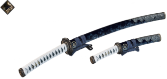

Heritage & Backstory
Jin Sakai grew up in Omi Village, Tsushima Island.
Growing up in the ruling class of samurai, he was
raised in a strict, disciplined environment, trained
by his father, Kazumasa Sakai, and uncle, Lord Shimura,
to become a samurai. During his youth, he was friends with
Ryuzo, and taken care of by his maid, Yuriko. When his father
was murdered while Jin was still an adolescent, his uncle,
Lord Shimura, jito (a land steward appointed by the shogunate)
of Tsushima island, took Jin as his ward and continued to train
Jin in the way of the samurai.
Current Events
The Mongols manage to conquer Tsushima in a grand battle, causing the disruption of the samurai.
Throughout the story, Jin goes on to attack Castle Kaneda, liberating the Izuhara region,
which in turn led to the rescue of his uncle, Lord Shimure, and later he secures Castle
Kaneda through brutal means. Due to this, Jin is cast out and labelled as a threat to
the honor code of the samurai, and he is now hunted down by Mongols and samurai alike. After
claiming Castle Shimura, the second region, Toyotama, is liberated. It can be assumed that Jin
goes on to liberate the last region, Kamiagata, as well since I haven't actually finished the
game.
Arsenal/Weapons
Sakai Katana and Tanto

The sword of clan Sakai, passed on through many generations. It is stated to have "saved lives
and ended wars." The Sakai sword is a sharp, reliable blade capable of slicing through flesh
and bone easily, but also seems to have a easy time slicing through armor as well, making it
a dangerous weapon you won't want to be on the sharp end of. A tanto is shorter version of
the Sakai katana, often imployed during assassinations, or when cutting hostages free. A
tanto is similar to a knife in its usage, and is not traditionally used in head-on combat.
Ghost Weapons
Due to the dire circumstances, Jin had to adapt in order to fight his enemy, learning the ways of
assassination, as well as how to use weapons like the infamous kunai, smoke bombs, sticky bombs,
firecrackers and wind chimes, and even a poison blowdart, which could either make his enemies
hallucinate, attacking their own comrades, or cause them to cough up their own blood and die
and slow, painful death.
.png)
.jpg)